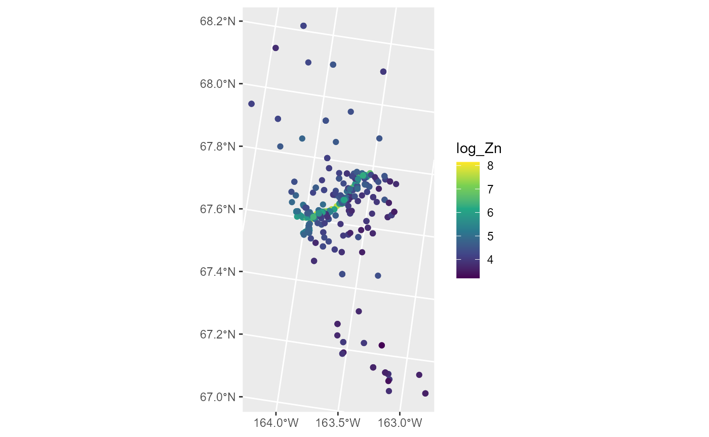

An Overview of Basic Features in spmodel
Michael Dumelle, Matt Higham, and Jay M. Ver Hoef
Source:vignettes/basics.Rmd
basics.RmdIntroduction
The spmodel package is used to fit and summarize spatial models and make predictions at unobserved locations (Kriging). This vignette provides an overview of basic features in spmodel. We load spmodel by running
If you use spmodel in a formal publication or report, please cite it. Citing spmodel lets us devote more resources to it in the future. We view the spmodel citation by running
citation(package = "spmodel")#>
#> To cite spmodel in publications use:
#>
#> Michael Dumelle, Matt Higham, and Jay M. Ver Hoef (2022). spmodel:
#> Spatial Statistical Modeling and Prediction. R package version 0.2.0.
#>
#> A BibTeX entry for LaTeX users is
#>
#> @Manual{,
#> title = {spmodel: Spatial Statistical Modeling and Prediction},
#> author = {Michael Dumelle and Matt Higham and Jay M. {Ver Hoef}},
#> year = {2022},
#> note = {R package version 0.2.0},
#> }There are two additional spmodel vignettes:
- A detailed guide to
spmodel:vignette("guide", "spmodel") - Technical details regarding many functions:
vignette("technical", "spmodel")
The Data
Many of the data sets we use in this vignette are sf objects. sf objects are data frames (or tibbles) with a special structure that stores spatial information. They are built using the sf (Pebesma 2018) package, which is installed alongside spmodel. We will use four data sets throughout this vignette:
-
moss: Ansfobject with heavy metal concentrations in Alaska. -
sulfate: Ansfobject with sulfate measurements in the conterminous United States. -
sulfate_preds: Ansfobject with locations at which to predict sulfate measurements in the conterminous United States. -
caribou: Atibble(a specialdata.frame) for a caribou foraging experiment in Alaska.
We will create visualizations using ggplot2 (Wickham 2016), which we load by running
ggplot2 is only installed alongside spmodel when dependencies = TRUE in install.packages(), so check that it is installed before reproducing any visualizations in this vignette.
Spatial Linear Models
Spatial linear models for a quantitative response vector \(\mathbf{y}\) have spatially dependent random errors and are often parameterized as
\[\begin{equation*} \mathbf{y} = \mathbf{X} \boldsymbol{\beta} + \boldsymbol{\tau} + \boldsymbol{\epsilon}, \end{equation*}\]
where \(\mathbf{X}\) is a matrix of explanatory variables (usually including a column of 1’s for an intercept), \(\boldsymbol{\beta}\) is a vector of fixed effects that describe the average impact of \(\mathbf{X}\) on \(\mathbf{y}\), \(\boldsymbol{\tau}\) is a vector of spatially dependent (correlated) random errors, and \(\boldsymbol{\epsilon}\) is a vector of spatially independent (uncorrelated) random errors. The spatial dependence of \(\boldsymbol{\tau}\) is explicitly specified using a spatial covariance function that incorporates the variance of \(\boldsymbol{\tau}\), often called the partial sill, and a range parameter that controls the behavior of the spatial covariance. The variance of \(\boldsymbol{\epsilon}\) is often called the nugget.
Spatial linear models are fit in spmodel for point-referenced and areal data. Data are point-referenced when the elements in \(\mathbf{y}\) are observed at point-locations indexed by x-coordinates and y-coordinates on a spatially continuous surface with an infinite number of locations. The splm() function is used to fit spatial linear models for point-referenced data (these are often called geostatistical models). Data are areal when the elements in \(\mathbf{y}\) are observed as part of a finite network of polygons whose connections are indexed by a neighborhood structure. For example, the polygons may represent counties in a state who are neighbors if they share at least one boundary. The spautor() function is used to fit spatial linear models for areal data (these are often called spatial autoregressive models). This vignette focuses on spatial linear models for point-referenced data, though spmodel’s other vignettes discuss spatial linear models for areal data.
The splm() function has similar syntax and output as the commonly used lm() function used to fit non-spatial linear models. splm() generally requires at least three arguments:
-
formula: a formula that describes the relationship between the response variable and explanatory variables.-
formulauses the same syntax as theformulaargument inlm()
-
-
data: adata.frameorsfobject that contains the response variable, explanatory variables, and spatial information. -
spcov_type: the spatial covariance type ("exponential","spherical","matern", etc).
If data is an sf object, the coordinate information is taken from the object’s geometry. If data is a data.frame (or tibble), then xcoord and ycoord are required arguments to splm() that specify the columns in data representing the x-coordinates and y-coordinates, respectively. spmodel uses the spatial coordinates “as-is,” meaning that spmodel does not perform any projections. To project your data or change the coordinate reference system, use sf::st_transform(). If an sf object with polygon geometries is given to splm(), the centroids of each polygon are used to fit the spatial linear model.
Next we show the basic features and syntax of splm() using the Alaskan moss data. We study the impact of log distance to the road (log_dist2road) on log zinc concentration (log_Zn). We view the first few rows of the moss data by running
moss#> Simple feature collection with 365 features and 7 fields
#> Geometry type: POINT
#> Dimension: XY
#> Bounding box: xmin: -445884.1 ymin: 1929616 xmax: -383656.8 ymax: 2061414
#> Projected CRS: NAD83 / Alaska Albers
#> # A tibble: 365 x 8
#> sample field_dup lab_rep year sideroad log_dist2road log_Zn
#> <fct> <fct> <fct> <fct> <fct> <dbl> <dbl>
#> 1 001PR 1 1 2001 N 2.68 7.33
#> 2 001PR 1 2 2001 N 2.68 7.38
#> 3 002PR 1 1 2001 N 2.54 7.58
#> 4 003PR 1 1 2001 N 2.97 7.63
#> 5 004PR 1 1 2001 N 2.72 7.26
#> 6 005PR 1 1 2001 N 2.76 7.65
#> 7 006PR 1 1 2001 S 2.30 7.59
#> 8 007PR 1 1 2001 N 2.78 7.16
#> 9 008PR 1 1 2001 N 2.93 7.19
#> 10 009PR 1 1 2001 N 2.79 8.07
#> # ... with 355 more rows, and 1 more variable: geometry <POINT [m]>We can visualize the distribution of log zinc concentration (log_Zn) by running
ggplot(moss, aes(color = log_Zn)) +
geom_sf(size = 2) +
scale_color_viridis_c()
Log zinc concentration appears highest in the middle of the spatial domain, which has a road running through it. We fit a spatial linear model regressing log zinc concentration on log distance to the road using an exponential spatial covariance function by running
spmod <- splm(log_Zn ~ log_dist2road, data = moss, spcov_type = "exponential")The estimation method is specified via the estmethod argument, which has a default value of "reml" for restricted maximum likelihood. Other estimation methods are "ml" for maximum likelihood, "sv-wls" for semivariogram weighted least squares, and "sv-cl" for semivariogram composite likelihood.
Printing spmod shows the function call, the estimated fixed effect coefficients, and the estimated spatial covariance parameters. de is the estimated variance of \(\boldsymbol{\tau}\) (the spatially dependent random error), ie is the estimated variance of \(\boldsymbol{\epsilon}\) (the spatially independent random error), and range is the range parameter.
print(spmod)#>
#> Call:
#> splm(formula = log_Zn ~ log_dist2road, data = moss, spcov_type = "exponential")
#>
#>
#> Coefficients (fixed):
#> (Intercept) log_dist2road
#> 9.7683 -0.5629
#>
#>
#> Coefficients (exponential spatial covariance):
#> de ie range
#> 3.595e-01 7.897e-02 8.237e+03Next we show how to obtain more detailed summary information from the fitted model.
Model Summaries
We summarize the fitted model by running
summary(spmod)#>
#> Call:
#> splm(formula = log_Zn ~ log_dist2road, data = moss, spcov_type = "exponential")
#>
#> Residuals:
#> Min 1Q Median 3Q Max
#> -2.6801 -1.3606 -0.8103 -0.2485 1.1298
#>
#> Coefficients (fixed):
#> Estimate Std. Error z value Pr(>|z|)
#> (Intercept) 9.76825 0.25216 38.74 <2e-16 ***
#> log_dist2road -0.56287 0.02013 -27.96 <2e-16 ***
#> ---
#> Signif. codes: 0 '***' 0.001 '**' 0.01 '*' 0.05 '.' 0.1 ' ' 1
#>
#> Pseudo R-squared: 0.683
#>
#> Coefficients (exponential spatial covariance):
#> de ie range
#> 3.595e-01 7.897e-02 8.237e+03Similar to summaries of lm() objects, summaries of splm() objects include the original function call, residuals, and a coefficients table of fixed effects. Log zinc concentration appears to significantly decrease with log distance from the road, as evidenced by the small p-value associated with the asymptotic z-test. A pseudo r-squared is also returned, which quantifies the proportion of variability explained by the fixed effects.
In the remainder of this subsection, we describe the broom (Robinson, Hayes, and Couch 2021) functions tidy(), glance() and augment(). tidy() tidies coefficient output in a convenient tibble, glance() glances at model-fit statistics, and augment() augments the data with fitted model diagnostics.
We tidy the fixed effects by running
tidy(spmod)#> # A tibble: 2 x 5
#> term estimate std.error statistic p.value
#> <chr> <dbl> <dbl> <dbl> <dbl>
#> 1 (Intercept) 9.77 0.252 38.7 0
#> 2 log_dist2road -0.563 0.0201 -28.0 0We glance at the model-fit statistics by running
glance(spmod)#> # A tibble: 1 x 9
#> n p npar value AIC AICc logLik deviance pseudo.r.squared
#> <int> <dbl> <int> <dbl> <dbl> <dbl> <dbl> <dbl> <dbl>
#> 1 365 2 3 367. 373. 373. -184. 363 0.683The columns of this tibble represent:
-
n: The sample size -
p: The number of fixed effects (linearly independent columns in \(\mathbf{X}\)) -
npar: The number of estimated covariance parameters -
value: The value of the minimized objective function used when fitting the model -
AIC: The Akaike Information Criterion (AIC) -
AICc: The AIC with a small sample size correction -
logLik: The log-likelihood -
deviance: The deviance -
pseudo.r.squared: The pseudo r-squared
The glances() function can be used to glance at multiple models at once. Suppose we wanted to compare the current model, which uses an exponential spatial covariance, to a new model without spatial covariance (equivalent to a model fit using lm()). We do this using glances() by running
#> # A tibble: 2 x 10
#> model n p npar value AIC AICc logLik deviance pseudo.r.squared
#> <chr> <int> <dbl> <int> <dbl> <dbl> <dbl> <dbl> <dbl> <dbl>
#> 1 spmod 365 2 3 367. 373. 373. -184. 363 0.683
#> 2 lmod 365 2 1 634. 636. 636. -317. 363. 0.671The much lower AIC and AICc for the spatial linear model indicates it is a much better fit to the data. Outside of glance() and glances(), the functions AIC(), AICc(), logLik(), deviance(), and pseudoR2() are available to compute the relevant statistics.
We augment the data with diagnostics by running
augment(spmod)#> Simple feature collection with 365 features and 7 fields
#> Geometry type: POINT
#> Dimension: XY
#> Bounding box: xmin: -445884.1 ymin: 1929616 xmax: -383656.8 ymax: 2061414
#> Projected CRS: NAD83 / Alaska Albers
#> # A tibble: 365 x 8
#> log_Zn log_dist2road .fitted .resid .hat .cooksd .std.resid
#> * <dbl> <dbl> <dbl> <dbl> <dbl> <dbl> <dbl>
#> 1 7.33 2.68 8.26 -0.928 0.102 0.112 -1.48
#> 2 7.38 2.68 8.26 -0.880 0.0101 0.000507 -0.316
#> 3 7.58 2.54 8.34 -0.755 0.0170 0.000475 -0.236
#> 4 7.63 2.97 8.09 -0.464 0.0137 0.000219 0.178
#> 5 7.26 2.72 8.24 -0.977 0.0177 0.00515 -0.762
#> 6 7.65 2.76 8.21 -0.568 0.0147 0.000929 -0.355
#> 7 7.59 2.30 8.47 -0.886 0.0170 0.00802 -0.971
#> 8 7.16 2.78 8.20 -1.05 0.0593 0.0492 -1.29
#> 9 7.19 2.93 8.12 -0.926 0.00793 0.000451 -0.337
#> 10 8.07 2.79 8.20 -0.123 0.0265 0.00396 0.547
#> # ... with 355 more rows, and 1 more variable: geometry <POINT [m]>The columns of this tibble represent:
-
log_Zn: The log zinc concentration. -
log_dist2road: The log distance to the road. -
.fitted: The fitted values (the estimated mean given the explanatory variable values). -
.resid: The residuals (the response minus the fitted values). -
.hat: The leverage (hat) values. -
.cooksd: The Cook’s distance -
.std.residuals: Standardized residuals -
geometry: The spatial information in thesfobject.
By default, augment() only returns the variables in the data used by the model. All variables from the original data are returned by setting drop = FALSE. Many of these model diagnostics can be visualized by running plot(spmod). We can learn more about plot() in spmodel by running help("plot.spmod", "spmodel").
Prediction (Kriging)
Commonly a goal of a data analysis is to make predictions at unobserved locations. In spatial contexts, prediction is often called Kriging. Next we use the sulfate data to build a spatial linear model of sulfate measurements in the conterminous United States with the goal of making sulfate predictions (Kriging) for the unobserved locations in sulfate_preds.
We visualize the distribution of sulfate by running
ggplot(sulfate, aes(color = sulfate)) +
geom_sf(size = 2) +
scale_color_viridis_c(limits = c(0, 45))Sulfate appears spatially dependent, as measurements are highest in the Northeast and lowest in the Midwest and West.
We fit a spatial linear model regressing sulfate on an intercept using a spherical spatial covariance function by running
sulfmod <- splm(sulfate ~ 1, data = sulfate, spcov_type = "spherical")We make predictions at the locations in sulfate_preds and store them as a new variable called preds in the sulfate_preds data set by running
sulfate_preds$preds <- predict(sulfmod, newdata = sulfate_preds)We visualize these predictions by running
ggplot(sulfate_preds, aes(color = preds)) +
geom_sf(size = 2) +
scale_color_viridis_c(limits = c(0, 45))These predictions have similar sulfate patterns as in the observed data (predicted values are highest in the Northeast and lowest in the Midwest and West). Next we remove the model predictions from sulfate_preds before showing how augment() can be used to obtain the same predictions:
sulfate_preds$preds <- NULLWhile augment() was previously used to augment the original data with model diagnostics, it can also be used to augment the newdata data with predictions:
augment(sulfmod, newdata = sulfate_preds)#> Simple feature collection with 100 features and 1 field
#> Geometry type: POINT
#> Dimension: XY
#> Bounding box: xmin: -2283774 ymin: 582930.5 xmax: 1985906 ymax: 3037173
#> Projected CRS: NAD83 / Conus Albers
#> # A tibble: 100 x 2
#> .fitted geometry
#> * <dbl> <POINT [m]>
#> 1 1.40 (-1771413 1752976)
#> 2 24.5 (1018112 1867127)
#> 3 8.99 (-291256.8 1553212)
#> 4 16.4 (1274293 1267835)
#> 5 4.91 (-547437.6 1638825)
#> 6 26.7 (1445080 1981278)
#> 7 3.00 (-1629090 3037173)
#> 8 14.3 (1302757 1039534)
#> 9 1.49 (-1429838 2523494)
#> 10 14.4 (1131970 1096609)
#> # ... with 90 more rowsHere .fitted represents the predictions.
Confidence intervals for the mean response or prediction intervals for the predicted response can be obtained by specifying the interval argument in predict() and augment():
augment(sulfmod, newdata = sulfate_preds, interval = "prediction")#> Simple feature collection with 100 features and 3 fields
#> Geometry type: POINT
#> Dimension: XY
#> Bounding box: xmin: -2283774 ymin: 582930.5 xmax: 1985906 ymax: 3037173
#> Projected CRS: NAD83 / Conus Albers
#> # A tibble: 100 x 4
#> .fitted .lower .upper geometry
#> * <dbl> <dbl> <dbl> <POINT [m]>
#> 1 1.40 -6.62 9.42 (-1771413 1752976)
#> 2 24.5 17.0 32.0 (1018112 1867127)
#> 3 8.99 1.09 16.9 (-291256.8 1553212)
#> 4 16.4 8.67 24.2 (1274293 1267835)
#> 5 4.91 -2.80 12.6 (-547437.6 1638825)
#> 6 26.7 19.2 34.2 (1445080 1981278)
#> 7 3.00 -4.92 10.9 (-1629090 3037173)
#> 8 14.3 6.76 21.8 (1302757 1039534)
#> 9 1.49 -6.34 9.32 (-1429838 2523494)
#> 10 14.4 6.74 22.1 (1131970 1096609)
#> # ... with 90 more rowsBy default, predict() and augment() compute 95% intervals, though this can be changed using the level argument.
While the fitted model in this example only used an intercept, the same code is used for prediction with fitted models having explanatory variables. If explanatory variables were used to fit the model, the same explanatory variables must be included in newdata with the same names they have in data. If data is a data.frame, coordinates must be included in newdata with the same names as they have in data. If data is an sf object, coordinates must be included in newdata with the same geometry name as they have in data. When using projected coordinates, the projection for newdata should be the same as the projection for data.
An Additional Example
We now use the caribou data from a foraging experiment conducted in Alaska to show an application of splm() to data stored in a tibble (data.frame) instead of an sf object. In caribou, the x-coordinates are stored in the x column and the y-coordinates are stored in the y column. We view the first few rows of caribou by running
caribou#> # A tibble: 30 x 5
#> water tarp z x y
#> <fct> <fct> <dbl> <dbl> <dbl>
#> 1 Y clear 2.42 1 6
#> 2 Y shade 2.44 2 6
#> 3 Y none 1.81 3 6
#> 4 N clear 1.97 4 6
#> 5 N shade 2.38 5 6
#> 6 Y none 2.22 1 5
#> 7 N clear 2.10 2 5
#> 8 Y clear 1.80 3 5
#> 9 Y shade 1.96 4 5
#> 10 Y none 2.10 5 5
#> # ... with 20 more rowsWe fit a spatial linear model regressing nitrogen percentage (z) on water presence (water) and tarp cover (tarp) by running
cariboumod <- splm(z ~ water + tarp, data = caribou,
spcov_type = "exponential", xcoord = x, ycoord = y)An analysis of variance can be conducted to assess the overall impact of the tarp variable, which has three levels (clear, shade, and none), and the water variable, which has two levels (water and no water). We perform an analysis of variance by running
anova(cariboumod)#> Analysis of Variance Table
#>
#> Response: z
#> Df Chi2 Pr(>Chi2)
#> (Intercept) 1 43.4600 4.327e-11 ***
#> water 1 1.6603 0.1975631
#> tarp 2 15.4071 0.0004512 ***
#> ---
#> Signif. codes: 0 '***' 0.001 '**' 0.01 '*' 0.05 '.' 0.1 ' ' 1There seems to be significant evidence that at least one tarp cover impacts nitrogen. Note that, like in summary(), these p-values are associated with an asymptotic hypothesis test (here, an asymptotic Chi-squared test).
Function Glossary
Here we list some commonly used spmodel functions.
-
AIC(): Compute the AIC. -
AICc(): Compute the AICc. -
anova(): Perform an analysis of variance. -
augment(): Augment data with diagnostics or new data with predictions. -
coef(): Return coefficients. -
confint(): Compute confidence intervals. -
covmatrix(): Return covariance matrices. -
deviance(): Compute the deviance. -
esv(): Compute an empirical semivariogram. -
fitted(): Compute fitted values. -
glance(): Glance at a fitted model. -
glances(): Glance at multiple fitted models. -
hatvalues(): Compute leverage (hat) values. -
logLik(): Compute the log-likelihood. -
loocv(): Perform leave-one-out cross validation. -
plot(): Create fitted model plots. -
predict(): Compute predictions and prediction intervals. -
pseudoR2(): Compute the pseudo r-squared. -
residuals(): Compute residuals. -
spautor(): Fit a spatial linear model for areal data (i.e., spatial autoregressive model). -
spautorRF(): Fit a random forest spatial residual model for areal data. -
splm(): Fit a spatial linear model for point-referenced data (i.e., geostatistical model). -
splmRF(): Fit a random forest spatial residual model for point-referenced data. -
sprnorm(): Simulate spatially correlated normal (Gaussian) random variables. -
summary(): Summarize fitted models. -
tidy(): Tidy fitted models. -
vcov(): Compute variance-covariance matrices of estimated parameters.
For a full list of spmodel functions alongside their documentation, see the documentation manual.
References
Pebesma, Edzer. 2018. “Simple Features for R: Standardized Support for Spatial Vector Data.” The R Journal 10 (1): 439–46. https://doi.org/10.32614/RJ-2018-009.
Robinson, David, Alex Hayes, and Simon Couch. 2021. Broom: Convert Statistical Objects into Tidy Tibbles. https://CRAN.R-project.org/package=broom.
Wickham, Hadley. 2016. Ggplot2: Elegant Graphics for Data Analysis. Springer-Verlag New York. https://ggplot2.tidyverse.org.